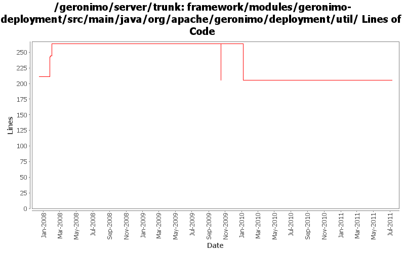

[root]/framework/modules/geronimo-deployment/src/main/java/org/apache/geronimo/deployment/util
 osgi
(6 files, 646 lines)
osgi
(6 files, 646 lines)

| Author | Changes | Lines of Code | Lines per Change |
|---|---|---|---|
| Totals | 30 (100.0%) | 122 (100.0%) | 4.0 |
| vamsic007 | 8 (26.7%) | 60 (49.2%) | 7.5 |
| djencks | 8 (26.7%) | 59 (48.4%) | 7.3 |
| jbohn | 2 (6.7%) | 2 (1.6%) | 1.0 |
| xuhaihong | 12 (40.0%) | 1 (0.8%) | 0.0 |
GERONIMO-6058 Replace StringBuffer usage with StringBuilder
1 lines of code changed in 1 file:
GERONIMO-5008 Create util methods for all the Geronimo components
0 lines of code changed in 11 files:
GERONIMO-4916 step 2 move sandbox osgi framework into trunk
59 lines of code changed in 3 files:
GERONIMO-4916 step 1 remove old framwork
0 lines of code changed in 3 files:
GERONIMO-4467 Fix NPE - patch by Shawn Jiang - thanks
2 lines of code changed in 2 files:
GERONIMO-3764 DeployerReaper fails to cleanup the temp directories left behind by deployer
o Offline deployer leaves temporary files behind since using URLs with "jar" protocol locks the jar file and prevents deletion. This is prevented by creating a temporary file when the protocol is "jar".
o This behaviour is controlled using a system property "org.apache.geronimo.deployment.util.DeploymentUtil.jarUrlRewrite" which is false by default, meaning no change from existing behavior for online-deployer.
o Offline deployer sets the system property to true.
o See http://www.mail-archive.com/dev@geronimo.apache.org/msg55811.html
21 lines of code changed in 1 file:
GERONIMO-3764 Deployer fails to cleanup the temp files created during deployment process
o NestedJarFile should close the baseJar only if it is created by itself.
o This is sort of correcting the previous rev 615389 which may close the parent jar in one case (I doubt if we will be hitting that instance in Geronimo, but just to keep things straight...)
2 lines of code changed in 1 file:
GERONIMO-3764 Deployer fails to cleanup the temp files created during deployment process
o NestedJarFile should close the baseJar irrespective of whether it is packed or not. In case of inPlace deployment of an ear file, not closing baseJar is resulting in a lock on DUMMY_JAR_FILE.
1 lines of code changed in 1 file:
GERONIMO-3764 Deployer fails to cleanup the temp files created during deployment process
o When url.openStream() is used to read an individual file from an archive i.e. when protocol is "jar", the archive file is locked even after the stream is closed and it prevents immediate deletion of temporary files created during the deployment process. This can be avoided by using JarFile.getInputStream() instead.
36 lines of code changed in 1 file:
GERONIMO-3764 DeployerReaper fails to cleanup the temp directories left behind by deployer
o NestedJarFile and UnpackedJarFile should call super.close() to release lock on DUMMY_JAR_FILE used in constructor.
0 lines of code changed in 4 files:
GERONIMO-3710 fix CCE through the miracle of generics and a bit of cleanup
0 lines of code changed in 2 files: